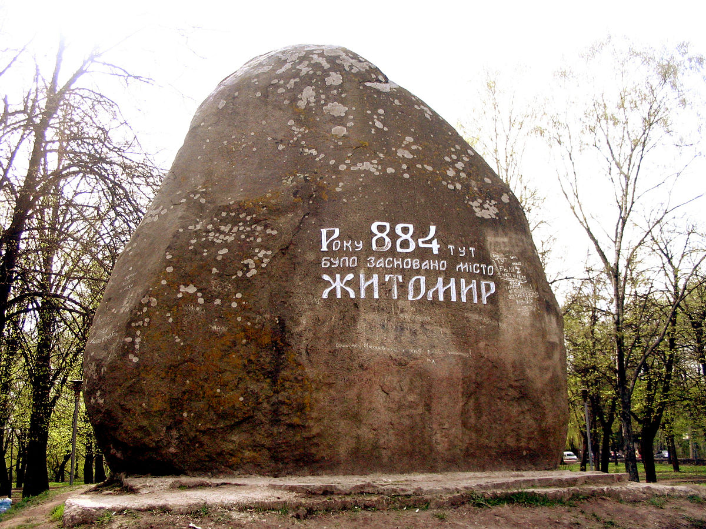
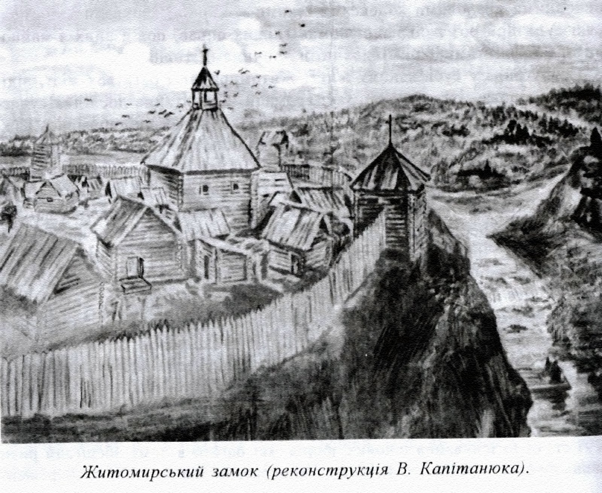
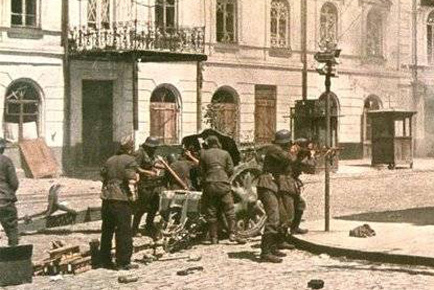

Де це?

Жито́мир — місто на півночі України, розташоване на річці Тетерів. Адміністративний центр Житомирської області та Житомирського району, центр Житомирської міської об'єднаної територіальної громади. Населення міста — 261,6 тис. осіб. Житомир є важливим транспортним вузлом: через місто пролягає автошлях М06, який поєднує Київ зі Львовом і Варшавою, Мінськом та Ізмаїлом, а також автошляхи E40, E583, М21. Головними вулицями є Київська, проспект Незалежності, Велика Бердичівська, Чуднівська, Перемоги. На річці Тетерів розташований Гідропарк. Належить до столичного економічного району. Основними галузями економіки міста є легка, переробна та харчова промисловість. Житомир є культурним та освітнім центром області.
Більше...Камінь, встановлений на честь 1100-річчя із дня заснування міста. Житомир належить до найдавніших міст України. За місцевою легендою, яку записав історик XIX століття, священник Микола Трипольський, місто започатковано близько 884 року, і свою назву отримало від імені руського дружинника київських князів Аскольда та Діра — Житоми́ра
Житомирський замок — дерев'яний замок-городня, займав північно-західну частину сучасної скелястої Замкової гори, яку з одного боку омиває річка Кам'янка Лісна, а з другого — Рудавка. Вздовж лівого берегу Рудавки розміщалось так зване місто.
20 жовтня 1941 р. Житомир став адміністративним центром однойменної генеральної округи. Особливі частини СС і гестапівські служби кидали військовополонених у стаціонарний табір смерті, замаскований під лазарет, де щодня гинуло близько 400 чоловік.
